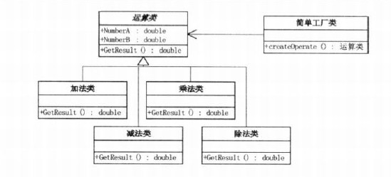

我从昨天下午开始看这本书，今天中午看完，发现这本书浅显易懂，作为入门读物还是不错的。
好脑子不如烂笔头，我还是将所学的东西记载下来，供我以后来看吧。
简单工厂模式

当需要加法类的时候，调用工厂类的CreateOperate()，要指定制造的Product
例如在大话设计模式P11给的运算工厂例子：
点击(此处)折叠或打开
- public static Operation createOperate(string operate)
- {
- Operation oper = null;
- switch (operate)
- {
- case "+":
- {
- oper = new OperationAdd();
- break;
- }
- case "-":
- {
- oper = new OperationSub();
- break;
- }
- case "*":
- {
- oper = new OperationMul();
- break;
- }
- case "/":
- {
- oper = new OperationDiv();
- break;
- }
- }
- return oper;
- }
- }
调用工厂，需要createOperator("/")，就能返回除法运算符。
优点：客户端不需要修改代码。
缺点： 当需要增加新的运算类的时候，不仅需新加运算类，还要修改工厂类，违反了开闭原则。
工厂方法模式
UML类图如下：

这个和简单工厂有区别，简单工厂模式只有一个工厂，工厂方法模式对每一个产品都有相应的工厂
好处：增加一个运算类（例如N次方类），只需要增加运算类和相对应的工厂，两个类，不需要修改工厂类。
缺点：增加运算类，会修改客户端代码，工厂方法只是把简单工厂的内部逻辑判断移到了客户端进行。
抽象工厂模式：
UML类图如下：

从图上可以看出这和工厂方法模式很相似，但是呢，有几个区别：
抽象工厂模式，一个具体工厂可以制造几个产品，例如微软工厂（相当于SqlserverFactory）可以制造微软鼠标（属于鼠标类，鼠标类下面有惠普鼠标，微软鼠标等，相当于上图中的IDepartment下面的SqlserverDepartment和AccessDepartment），也可以制造微软键盘(属于键盘类，键盘类下面有惠普键盘，微软键盘等，相当于上图中的IUser下面的SqlserverUser和AccessUser）。
引用http://blog.csdn.net/wangwenhui11/article/details/3955125中的话：
工厂方法模式：一个抽象产品类，可以派生出多个具体产品类。
一个抽象工厂类，可以派生出多个具体工厂类。
每个具体工厂类只能创建一个具体产品类的实例。
抽象工厂模式：多个抽象产品类，每个抽象产品类可以派生出多个具体产品类。
一个抽象工厂类，可以派生出多个具体工厂类。
每个具体工厂类可以创建多个具体产品类的实例。
区别：工厂方法模式只有一个抽象产品类，而抽象工厂模式有多个。
工厂方法模式的具体工厂类只能创建一个具体产品类的实例，而抽象工厂模式可以创建多个。
抽像工厂优缺:
优点：易于交换产品系列，例如Access和SQLServer数据库之间切换。
缺点：例如增加一个机箱产品，不仅需要添加三个类“机箱类，微软机箱，惠普机箱”，还要修改惠普工厂，微软工厂支持制造机箱。而添加一个联想工厂的时候，只需要添加三个类，使用联想工厂还是要修改客户端代码的。
在《大话设计模式》中，提出用简单工厂模式改进抽象工厂模式的方法。


DataAccess的代码如下:

这样，在DataAccess里面直接指定数据库（指定品牌），当需要换数据库（or 品牌）的时候，修改DataAccess内的代码。
当然可以用反射方法修改数据库，这样，只需要修改配置文件。就完美的改善了抽象工厂的缺点，而且在客户端不用修改代码。
反射实现：